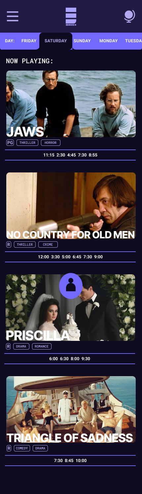
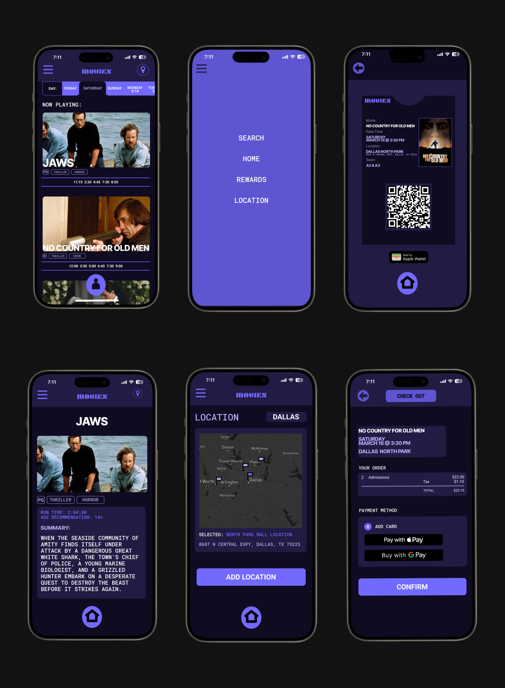
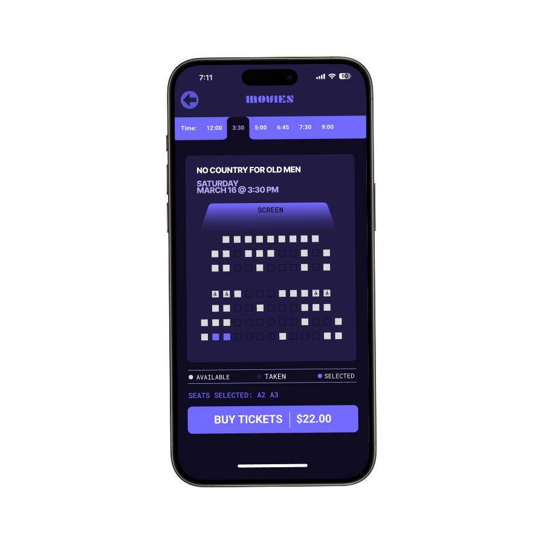
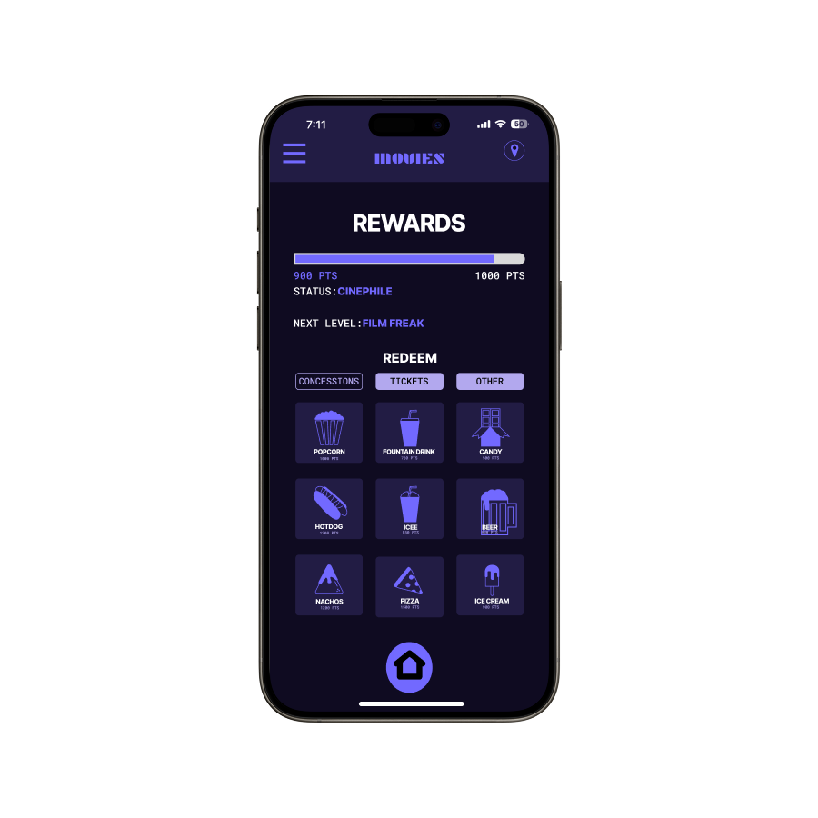

A movie ticketing app designed around how people actually choose what to watch. Not the studio. Not the algorithm. The user.

Project Overview
The movie ticketing space is crowded. Apps and websites for buying tickets exist everywhere, yet most of them feel outdated, cluttered, and indifferent to the person actually trying to use them. Seat selection is broken or missing. Rewards are buried. Navigation feels designed for a different era.
My goal was to design a ticketing app that puts the user first. Through research, testing, and iteration, I built something that makes going to the movies feel as easy as it should be.
Core Objectives
User Research
I conducted 8 user interviews examining how people currently buy movie tickets and what frustrates them most. The findings pointed in one direction: existing apps are designed around the business, not the person buying the ticket.
don't consistently use the same app or website to buy tickets
are frustrated by the lack of proper seat selection in current apps
find existing ticketing apps and websites cluttered and hard to navigate
wish rewards and loyalty tracking was easier to find and understand
Design Challenges
Every person interviewed switches between apps depending on the theater. There is no product compelling enough to keep users coming back, which means every session starts from zero.
80% of users were frustrated by seat selection on existing apps. Cramped maps, no showtime preview, and unclear labeling make picking a seat more stressful than it should ever be.
Most ticketing apps are visually overloaded with promotions, ads, and competing CTAs. Users lose the path to actually buying a ticket underneath everything else the app is trying to sell them.
Rewards programs exist in most apps but 60% of users can't easily find or track them. When the incentive to come back is buried, it stops being an incentive at all.
User Research
Father of two · Suburban moviegoer · Weekend user
"I just want to grab tickets for the family without spending ten minutes trying to figure out the app."
Becca
Single adult who goes to the movies twice a month. Wants seat selection and rewards points but prefers not to download yet another app. She browses on the website when possible and abandons anything that feels like too much work.
Caleb
Shared Pain Points
Design Process
Competitive analysis of existing ticketing apps and 8 user interviews to map real frustrations and habits.
Synthesized research into three user personas and identified the four core problems worth solving.
Built wireframes and a full interactive prototype in Figma focused on clean navigation and seat selection.
Ran usability tests with real users navigating the prototype without guidance, then iterated on the findings.
Design Solutions

Testing confirmed the core approach worked. Users praised the uncluttered layout and clear labeling throughout. Every screen was designed with one primary action so users never have to guess what to do next.

Built a seat selection flow that shows multiple showtimes on the same screen so users can compare before committing. Testing flagged this as a standout feature. No more jumping back and forth between screens to find the right time and seat combination.

The rewards section tested as a genuine engagement driver. Based on feedback, the bottom nav was replaced with a floating rewards button so points are always one tap away. The label was also renamed from "You" to "Rewards" after testers found the original unclear.
Outcome
The final design addressed every major pain point surfaced in research. A clean interface, a seat selection flow that actually works on mobile, and a rewards system that is impossible to miss. The app gives users a reason to come back because it respects their time and makes the whole experience feel effortless.
← Back to All Work